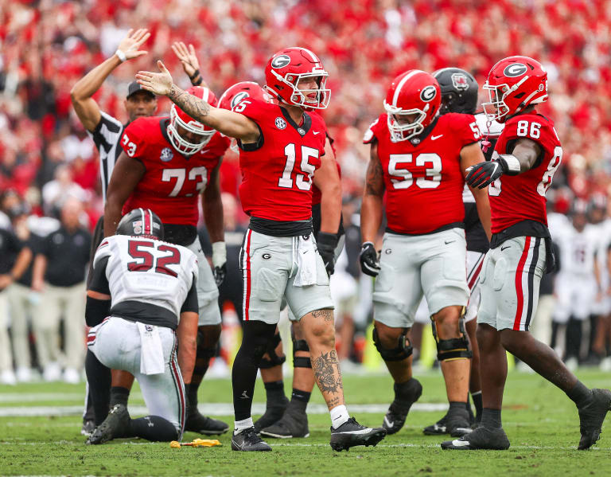

Thus far into my Computer Science career, I have worked on a variety of projects. The majority of which have been for school in my Intro to Programming, Software Development, and Data Structures classes. With this foundational knowledge, I have also expanded to other projects outside of school that utilize other languages and frameworks. I enjoy looking back on them but also know that there is so much more I want and need to do right now. I have included some of my most relevant projects below:

-Java, Unix, Emacs, Git, RESTful APIs, JSON
-Connected CFB Data API and the Bing Search API to produce an app using JavaFX
-Final product displayed different images relevant to the player, player data, and usage based on season
-Python, NLTK, Twitter API, Docker, JSON
-Done for AP Research, included a paper and 20 minute presentation (scored a 5)